Network-related products |
Programmable Controllers MELSEC
CC-Link IE Line Up


Programmable Controllers
CC-Link IE embedded CPU module
- CPU module with CC-Link IE embedded
- Dual Ethernet ports on the network side enable the module to operate as an Ethernet or CC-Link IE Field Network master/local station, or as a CC-Link IE Controller Network control/normal station
- The Ethernet port on the CPU side is used as an Ethernet communications port
- Dual Ethernet ports on the network side can be used as a gateway
■ Network combination*1
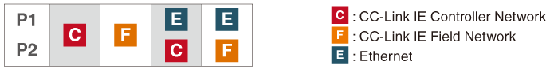
- *1.The CC-Link IE Field and CC-Link IE Controller networks cannot be used together.
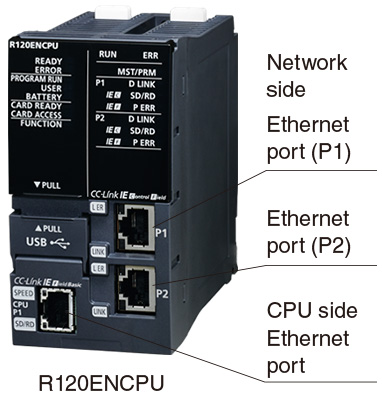
Multi-network supporting Ethernet interface module
- RJ71EN71*2
- Dual Ethernet ports enable the module to operate as an Ethernet or CC-Link IE Field Network master/local station, or a CC-Link IE Controller Network control/normal station
■ Network combination*3
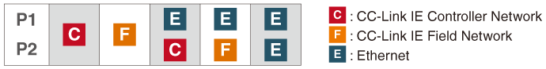
- *2.Safety communication functions are not supported.
- *3.The CC-Link IE Field and CC-Link IE Controller networks cannot be used together.
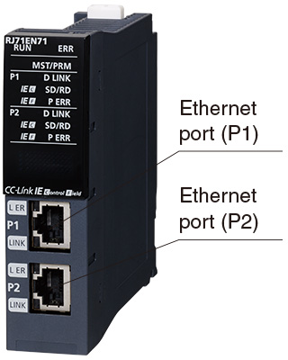
CC-Link IE Field Network master/local module
- These modules can be used either as a CC-Link IE Field Network master or local station
- The station-based block data assurance feature ensures data integrity between stations (Output delay can be shortened by synchronization with END processing)
- In combination with a MELSEC iQ-R Series Safety CPU, RJ71GF11-T2 can be used as a safety master/local station
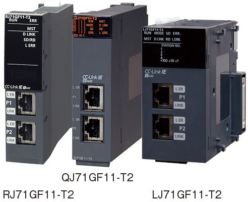
CC-Link IE Controller Network module
- These modules can be used either as a CC-Link IE Controller Network control or normal station
- Enables connection of an external power supply (QJ71GP21S-SX), which ensures communication even if the controller power is lost
- The station-based block data assurance feature ensures data integrity between stations
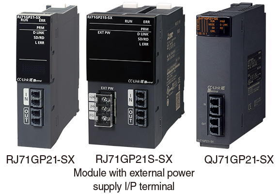
CC-Link IE Field Network simple motion module
- Perform control of high-speed I/O and motion in one network, and provide a suitable system layout with highly flexible wiring
- Perform advanced motion control such as synchronous, cam, and positioning control including trajectory control
- Can be used as a CC-Link IE Field Network master station*4
- *4.RD77GF does not support the sub-master function.
QD77GF does not support the local, sub-master, and safety communication functions.
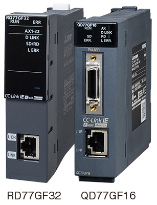
CC-Link IE Field Network remote head module*5
- A remote station can be realized through a combination of MELSEC iQ-R Series I/O and intelligent function modules used together with this module
- Through its flexibility in system design, a remote station can be created based on the application size
- Can access other stations on the network via USB port and perform parameter setting and monitoring, saving on system configuration time
- *5.For details of applicable modules, please refer to the relevant product manual.
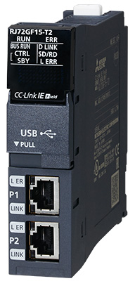
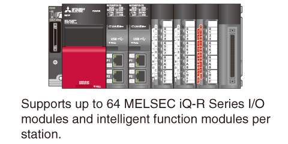
CC-Link IE Field Network head module*6
- A remote station can be realized through a combination of MELSEC-L Series I/O and intelligent function modules used together with this module
- Through its flexibility in system design, a remote station can be created based on the application size
- Can access other stations on the network via USB port and perform parameter setting and monitoring, saving on system configuration time
- *6.For details of applicable modules, please refer to the relevant product manual.
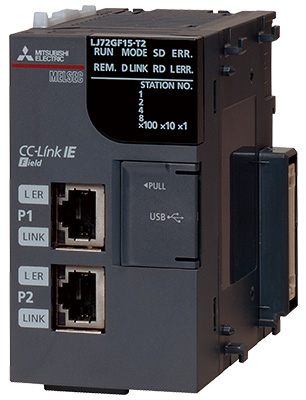
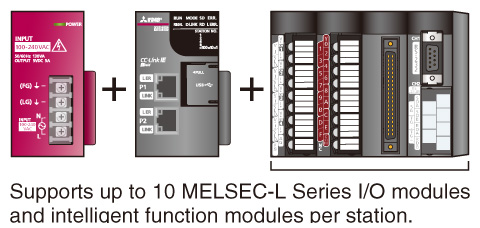
CC-Link IE Field Network intelligent device station module
- Enables connection of MELSEC iQ-F Series to CC-Link IE Field Network as an intelligent device station
- Connectable to high-speed and high-capacity CC-Link IE Field Network, which also supports distributed controls, realizing shorter operating cycle time and improved traceability
- Supports seamless communication, which enables setup and maintenance from any network-connected point including a computer and shop floor device
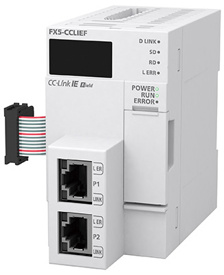